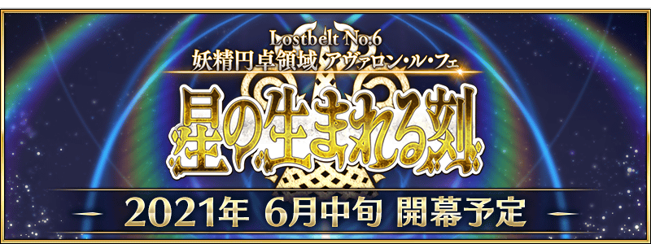

第2部 第6章「Lostbelt No.6 妖精圓卓領域 阿瓦隆・勒菲 星辰誕生之刻」預定6月中旬開幕！
開放條件為通過第2部 第5.5章「地獄界曼荼羅 平安京 轟雷一閃」，請務必推進主線關卡期待續報！
◆開幕預定時期◆
2021年6月中旬
◆開放條件◆
通過第2部 第5.5章「地獄界曼荼羅 平安京 轟雷一閃」後開放。
※不需要通過亞種特異點(從Ⅰ到Ⅳ)。
◆關於第2部 第6章「Lostbelt No.6 妖精圓卓領域 阿瓦隆・勒菲 星辰誕生之刻」的注意◆ ・第2部 第6章「Lostbelt No.6 妖精圓卓領域 阿瓦隆・勒菲 星辰誕生之刻」中，在戰鬥敗北時預定能使用可在「主線關卡通過聲援宣傳活動」獲得的「靈脈石」回歸戰鬥。
■第2部 第6章配信記念生放送的情報公開中！
將在2021年6月11日(五)播送「Fate/Grand Order 迦勒底放送局 Vol.16 第2部 第6章 阿瓦隆・勒菲 配信前夕SP」。
關於詳情，請確認下述。
◆節目標題◆
「Fate/Grand Order 迦勒底放送局 Vol.16 第2部 第6章 阿瓦隆・勒菲 配信前夕SP」
◆配信時間◆
2021年6月11日(五)
事前配信:17:30～
本配信:18:00～
詳情在此
其他還有，
・「Lostbelt No.6 妖精圓卓領域 阿瓦隆・勒菲 星辰誕生之刻」開幕前夕宣傳活動
・「Lostbelt No.6 妖精圓卓領域 阿瓦隆・勒菲 星辰誕生之刻」開幕前夕Pick Up召喚
・主線關卡通過聲援宣傳活動
以期間限定同時舉辦！
關於詳情，請自下述橫幅確認。
■「Lostbelt No.6 妖精圓卓領域 阿瓦隆・勒菲 星辰誕生之刻」開幕前夕宣傳活動詳細情報

■「Lostbelt No.6 妖精圓卓領域 阿瓦隆・勒菲 星辰誕生之刻」開幕前夕Pick Up召喚詳細情報

■「主線關卡通過聲援宣傳活動」詳細情報